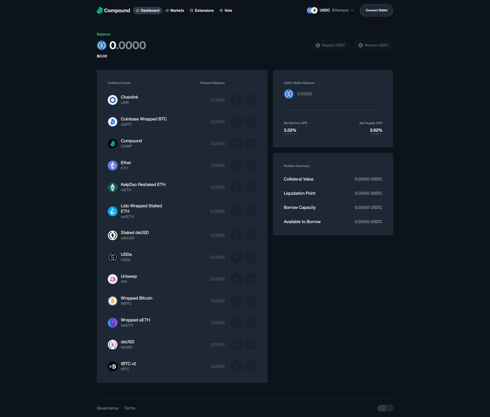

Offline Website Builder
Decentralized finance (DeFi) transformed traditional financial primitives by rebuilding them as permissionless, programmable protocols on public blockchains. Among these, Compound Finance (commonly called “Compound”) emerged as one of the earliest and most influential decentralized lending and borrowing markets. Launched in 2018 and operating on Ethereum, Compound enables users to supply crypto assets to liquidity pools to earn interest and to borrow against supplied collateral — all without a centralized intermediary. This article explains how Compound works, its core components and incentives, the economic models behind interest rates and liquidity, governance and COMP tokens, practical use cases, and the risks and best practices for participating in Compound markets.
Compound is an algorithmic, autonomous protocol that creates on-chain money markets where users can supply assets (lend) and borrow assets. Suppliers deposit tokens into a pool and receive interest-bearing cTokens (Compound’s ERC-20 tokens), which represent their share of the pool and accrue interest automatically. Borrowers can take out loans by posting supported assets as collateral, borrowing up to a collateral factor limit. Interest rates are determined algorithmically based on supply and demand for each asset, enabling continuous price discovery without manual intervention.
Core components of Compound
cTokens: When users supply an asset (e.g., DAI, USDC, ETH), they receive the corresponding cToken (cDAI, cUSDC, cETH). cTokens are ERC-20 tokens that accrue interest via an increasing exchange rate relative to the underlying asset. Redeeming cTokens returns the underlying asset plus earned interest.
Money markets: Compound operates separate markets (pools) for each supported asset. Each market maintains supply and borrow balances and calculates interest rates using a utilization-based model.
Controller and Comptroller: Smart contracts that enforce protocol-wide rules — which markets are allowed, collateral factors, liquidation incentives, and risk parameters. The Comptroller also distributes COMP governance tokens as incentives.
Oracle: Price oracles feed on-chain price data for assets, which are essential for calculating collateral values and triggering liquidations.
Governance and COMP: Compound’s governance is tokenized via COMP. COMP holders can propose and vote on protocol changes, parameter updates, and new asset listings.
Supplying (lending): A user transfers tokens into a Compound market. In return, they get cTokens. The cToken’s exchange rate with the underlying asset increases over time to reflect accumulated interest. Suppliers can redeem cTokens at any time (subject to liquidity).
Borrowing: A user supplies collateral to obtain a borrow limit defined by collateral factors. For example, if the collateral factor for an asset is 75%, supplying $1,000 worth lets the user borrow up to $750 worth of other assets. Borrowers pay interest on the borrowed amount; interest accrues continuously and increases the user’s debt.
Collateral and liquidation: If the value of collateral falls (due to price changes) or borrowed amounts increase so that the borrower’s account becomes undercollateralized relative to the liquidation threshold, liquidators can repay part of the debt and seize a discounted portion of collateral, earning a liquidation incentive.
Interest accrual: Interest on both supplied and borrowed balances accrues every block. The cToken exchange rate increases for suppliers, while borrower balances grow by the accrued interest.
Compound uses a utilization-based interest rate model. Utilization (U) is the ratio of borrowed assets to total supplied assets in a market:
U = borrows / (cash + borrows - reserves)
Interest rates (supply and borrow APYs) are derived from a borrow-rate function that increases with utilization. At low utilization, rates are low to incentivize borrowing; as utilization approaches a kink (a set utilization point), rates rise sharply to attract suppliers and discourage further borrowing. Reserves (a protocol-controlled fraction of interest) accumulate to protect the protocol and cover potential losses.
The supply rate (what lenders earn) is a function of the borrow rate, utilization, and reserve factor:
supply_rate = borrow_rate * utilization * (1 - reserve_factor)
This design aligns incentives: higher borrowing demand increases borrow rates, which raises supply rates, encouraging more capital to flow into the market.
cTokens are standard ERC-20 tokens, enabling composability within the DeFi ecosystem. Users can use cTokens within other protocols, such as using cTokens as collateral elsewhere, or wrapping them for yield strategies. The cToken exchange rate abstracts interest accrual, so composable contracts interact seamlessly with interest-bearing assets.
Compound introduced COMP as a governance token distributed to protocol users (both suppliers and borrowers) as an incentive. COMP governance allows token holders to propose and vote on protocol upgrades, parameter changes, and new asset listings. This decentralized governance model gives the community control over risk parameters, fees, reserve factors, and more. The token distribution mechanism also spurred yield-seeking behaviors (yield farming) where users borrowed and supplied assets primarily to earn COMP rewards.
Use cases and strategies
Passive yield for holders: Users with idle tokens can supply assets to earn interest.
Borrowing for leverage: Traders can borrow assets to increase exposure; for example, borrow DAI to buy more ETH, then supply the borrowed ETH back to Compound to leverage.
Arbitrage and liquidity provision: Market makers and arbitrageurs move capital across markets to capture yield differentials.
Collateral swaps and refinancing: Users can borrow against one asset to repay debts elsewhere or shift positions across protocols.
Yield farming and composability: Combining Compound with other DeFi protocols (e.g., providing liquidity on AMMs, staking) to maximize returns.
Participating in Compound involves multiple risk vectors. Understanding and managing these risks is crucial.
Smart contract risk: As a software protocol, Compound could contain bugs or vulnerabilities that attackers might exploit, potentially leading to loss of funds. The protocol has undergone audits, but risk remains.
Liquidation risk: Price volatility can quickly reduce collateral value, risking liquidation. Borrowers must maintain healthy collateral ratios and monitor positions.
Oracle manipulation and price feed risk: Compound relies on price oracles. If an oracle is manipulated or fails, liquidations or bad debt can occur.
Protocol parameter risk: Governance decisions could change collateral factors, reserve factors, or list risky assets, altering participants’ exposure.
Composability risk (risk contagion): Since many DeFi protocols interdepend, a failure or exploit in a connected protocol can cascade into Compound positions.
Market risk and liquidity risk: Sudden withdrawals or market stress can make it hard to redeem supplied assets immediately without slippage or loss.
Regulatory risk: DeFi protocols operate in a complex regulatory landscape. Future regulations could affect access, operations, or the legal status of tokens.
Diversify collateral and avoid over-leveraging: Keep borrow levels conservative relative to collateral to withstand volatility.
Use stablecoins for borrowing when possible: To reduce exposure to volatile assets, borrow stablecoins if your goal is liquidity rather than market exposure.
Monitor positions and use alerts: Use dashboards, on-chain explorers, and automated alerts to track collateral ratios and liquidation risks.
Understand governance and participate: Stakeholders should follow governance proposals and vote to influence risk parameters.
Use insurance where available: Third-party DeFi insurance products can hedge against smart contract failures or certain exploit scenarios.
Keep up with protocol updates and audits: Awareness of upgrades, oracle changes, or parameter adjustments reduces surprise exposure.
Compound’s algorithmic interest rate model and tokenized governance contributed to a broader DeFi movement emphasizing permissionless access, composability, and open liquidity. Compound’s COMP distribution kickstarted yield farming and liquidity mining trends, demonstrating how token incentives can bootstrap liquidity and user engagement. However, these incentives can also encourage excessive risk-taking and complex levered positions that magnify systemic fragility.
Compound has also influenced traditional financial thinking: programmable money markets offer transparent, auditable interest rate discovery and continuous liquidity—features that can inspire hybrid products in regulated finance.
Since its inception, Compound has evolved. The protocol has iterated on parameters, added assets, and explored cross-chain deployments and integrations. The expansion to other Layer 2 networks and cross-chain bridges aims to lower transaction costs and increase accessibility. Additionally, improvements in governance processes (e.g., timelocks, multisig safeguards) and oracle robustness strengthen protocol resilience.
Practical example: Supplying and borrowing (conceptual)
Alice supplies 1,000 USDC to Compound and receives cUSDC. The supply earns an annual percentage yield (APY) that updates as market conditions change. Alice can redeem cUSDC anytime subject to liquidity.
Bob supplies 2 ETH as collateral. With a hypothetical collateral factor of 75% and ETH worth $2,000 each, Bob’s collateral equals $4,000, allowing a borrow limit of up to $3,000 worth of other assets (e.g., DAI). If ETH price drops or Bob borrows near his limit, he risks liquidation if the value falls below the required threshold.
Compound Finance is a foundational DeFi protocol that democratized access to lending and borrowing through algorithmic markets, tokenized governance, and composability. Its interest rate model, cTokens, and governance token (COMP) created new economic dynamics in crypto, enabling yield strategies and contributing to DeFi’s rapid innovation. However, participants must weigh substantial risks—smart contract bugs, oracle failures, liquidations, and regulatory uncertainty—when engaging with Compound. Prudent risk management, conservative leverage, and active monitoring remain essential. As Compound continues to evolve—particularly with cross-chain and Layer 2 expansions—it will likely remain a central building block in decentralized finance, shaping how capital is allocated and priced on-chain.
If you’d like, I can:
Provide a step-by-step walkthrough showing how to supply and borrow on Compound using a wallet (conceptual, not transaction-level).
Summarize the key governance proposals and recent COMP-driven changes.
Compare Compound’s model to other DeFi lending protocols (e.g., Aave, MakerDAO) in a table.
Offline Website Builder